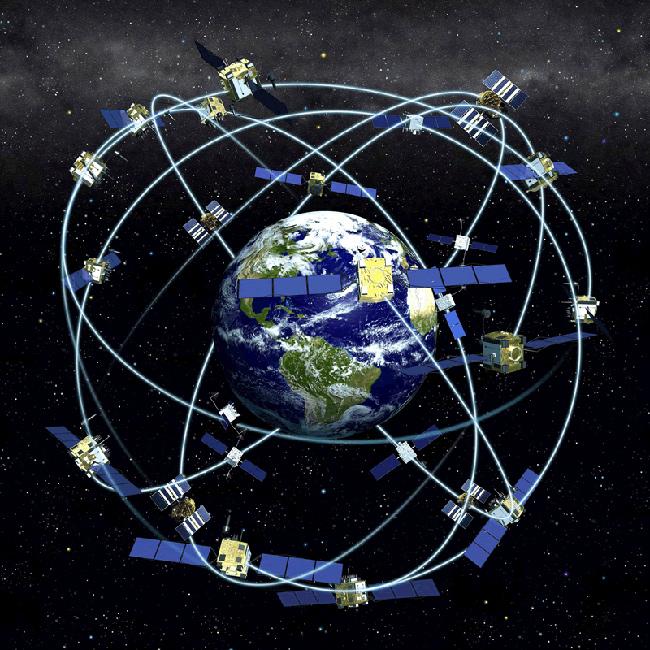

Características

Precisión: El GPS puede proporcionar una precisión de posicionamiento de hasta unos pocos metros.
Fiabilidad: El GPS es un sistema muy fiable que funciona en todo tipo de condiciones climáticas.
Facilidad de uso: El GPS es un sistema fácil de usar que no requiere conocimientos técnicos especiales.
Cobertura global: El GPS está disponible en todo el mundo.
Versatilidad: El GPS se puede utilizar para una amplia variedad de aplicaciones.